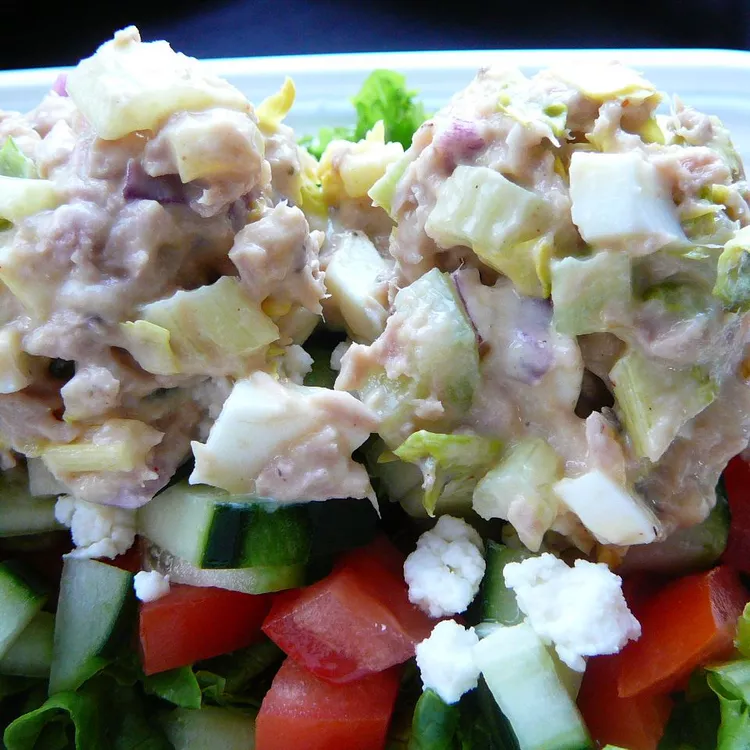

Tuna salad

Tuna salad is the most versatile easy healthy meal. Very high in protein and low in carbs. A staple for every broke college student.
Ingredients
- 4 (5 ounce) cans tuna, drained
- 5 large hard boiled eggs
- 1/2 cup chopped sweet onion
- 1 stalk celery, chopped
- 3/4 cup mayo
- 1 1/2 dill pickle relish
- 1/2 teaspoon celery seed
- 2 teaspoon honey mustard
- 1/2 teaspoon season salt
- 1/2 teaspoon black pepper
Directions
- Mix tuna, eggs, onion, and celery together in a large bowl.
- Mix mayonnaise, relish, honey mustard, celery seed, seasoned salt, and pepper together in a small bowl; pour over tuna mixture and stir gently until all ingredients are coated. Serve immediately, or cover and chill until ready to serve.